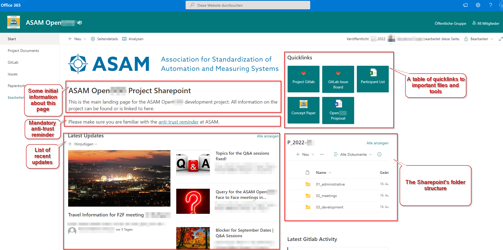

Project Sharepoint
Project landing page
Every project at ASAM has its own Microsoft Sharepoint dashboard that acts as the main landing page for the project group.
The OR, together with the Project Lead, populates and maintains the Sharepoint’s structure and content.
It is the responsibility of each presenter, however, to upload their presentation material.
The following image shows an example.

The Sharepoint area includes a link to project documents.+ Every project at ASAM has its own Microsoft Sharepoint storage area, however all employ the same base folder structure.
| Sharepoint can be used online or synced locally. |
├───01_administrative................................// this is where all administrative topics are stored
│ ├───controlling..................................// contains all topics related to the controlling part of the project
│ ├───<Projectname> Participant list.xlsx.....// contains all enrolled project members with their contact details and their Subgroup assignments
│ └───<Projectname> Proposal.<extension>...........// the project proposal as .docx or .pdf or .html
│
├───02_meetings......................................// contains folders with provided presentations and optional recordings of project meetings
│
└───03_development...................................// may be used to share and exchange supporting material and other external content not directly relevant to the standard itselfStorage areas for previous projects for the same standard are archived and available to project members on demand.
What Sharepoint is NOT used for
Any content directly relevant to the project’s deliverables (such as images to be used in a standard) are not to be organized through Sharepoint. Instead, such information has to be entered through the project’s repository so that is subjected to the same version control as all the other content.
Participants list
Each Sharepoint contains a list of all participants in the corresponding project. This list is populated with enrollments during a project’s proposal phase. However, participation and assignments may change during development. It is the responsibility of the OR to keep this document up to date.
This list is the single source for all permissions in a project.